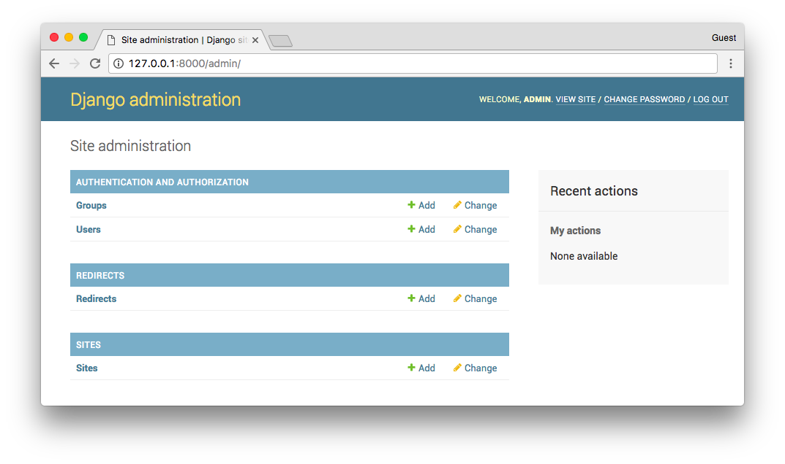
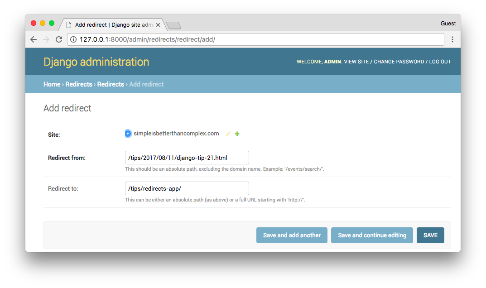

Django comes with a few optional apps that can easily be installed. One of those apps is the Redirects App, which is particularly useful in the cases where you want to update some existing URLs without compromising your Website SEO or in any case avoid 404 errors.
It basically works by creating a table in the database with two columns, old_path and new_path. Every time your
Website raises a 404 error, the Redirects App will intercept the response and check this particular table for a match.
If the requested URL is found in the column old_path, instead of raising the 404 error, it will redirect the user
to the new_path returning a 301 code (Moved Permanently).
Alright, so let’s see how it works in practice.
Installation
The Django Redirects App requires the sites framework to be installed. You can install them by adding the apps to
your project’s INSTALLED_APPS:
settings.py
INSTALLED_APPS = [
'django.contrib.admin',
'django.contrib.auth',
'django.contrib.contenttypes',
'django.contrib.sessions',
'django.contrib.messages',
'django.contrib.staticfiles',
'django.contrib.sites',
'django.contrib.redirects',
]Set a SITE_ID so the sites framework works properly.
settings.py
SITE_ID = 1Now, add the redirects middleware to the MIDDLEWARE configuration:
settings.py
MIDDLEWARE = [
'django.middleware.security.SecurityMiddleware',
'django.contrib.sessions.middleware.SessionMiddleware',
'django.middleware.common.CommonMiddleware',
'django.middleware.csrf.CsrfViewMiddleware',
'django.contrib.auth.middleware.AuthenticationMiddleware',
'django.contrib.messages.middleware.MessageMiddleware',
'django.middleware.clickjacking.XFrameOptionsMiddleware',
'django.contrib.redirects.middleware.RedirectFallbackMiddleware',
]Make sure you run the migrate command to create the required tables:
python manage.py migrateUsage
The easiest way to use is through Django Admin. If you are not currently using the Django Admin app, and it’s a one time thing (for example you are migrating a site from other platform), you can use just the Python API via command line or creating a fixture. If you are not using Django Admin and still wants to add it as a functionality for the site administrator, then you will have to create your own views for it.
Using the Redirects App with Django Admin
It will be automatically added to the Django Admin interface.

You will see, it’s very straightforward. Just add the paths and it will do all the hard work for you.

We can test it by typing the old path in the browser and see if redirects correctly. Another way is examining the
response body in the terminal. You can easily do it by using curl:
curl --head 127.0.0.1:8000/tips/2017/08/11/django-tip-21.html
HTTP/1.0 301 Moved Permanently
Date: Fri, 11 Aug 2017 15:42:27 GMT
Server: WSGIServer/0.2 CPython/3.6.1
Content-Type: text/html; charset=utf-8
Location: /tips/redirects-app/
X-Frame-Options: SAMEORIGIN
Content-Length: 0Using the Redirects App with the Python API
You can manually create the redirect records interacting directly with the Redirect model. It lives in
django/contrib/redirects/models.py
You can start a Python shell with your project models loaded by running the following command:
python manage.py shellHere is how you can create a few redirect entries:
from django.contrib.redirects.models import Redirect
from django.contrib.sites.models import Site
from django.conf import settings
site = Site.objects.get(pk=settings.SITE_ID)
Redirect.objects.create(site=site, old_path='/index.html', new_path='/')
Redirect.objects.create(site=site, old_path='/tips/2017/08/11/django-tip-21.html', new_path='/tips/redirects-app/')Using the Redirects App with Fixtures
Just create a JSON file following the template of the example below:
redirects-fixture.json
[
{
"model":"redirects.redirect",
"fields":{
"site":1,
"old_path":"/tips/2017/08/11/django-tip-21.html",
"new_path":"/tips/redirects-app/"
}
},
{
"model":"redirects.redirect",
"fields":{
"site":1,
"old_path":"/index.html",
"new_path":"/"
}
}
]Then you can load it directly to your database by running the command below:
python manage.py loaddata redirects-fixtures.json
Installed 2 object(s) from 1 fixture(s)And that’s it!
 What You Should Know About The Django User Model
What You Should Know About The Django User Model
 How to Use Django's Flatpages App
How to Use Django's Flatpages App
 How to Create a Password Reset View
How to Create a Password Reset View
 How to Extend Django User Model
How to Extend Django User Model
 How to Setup a SSL Certificate on Nginx for a Django Application
How to Setup a SSL Certificate on Nginx for a Django Application
 How to Deploy a Django Application to Digital Ocean
How to Deploy a Django Application to Digital Ocean